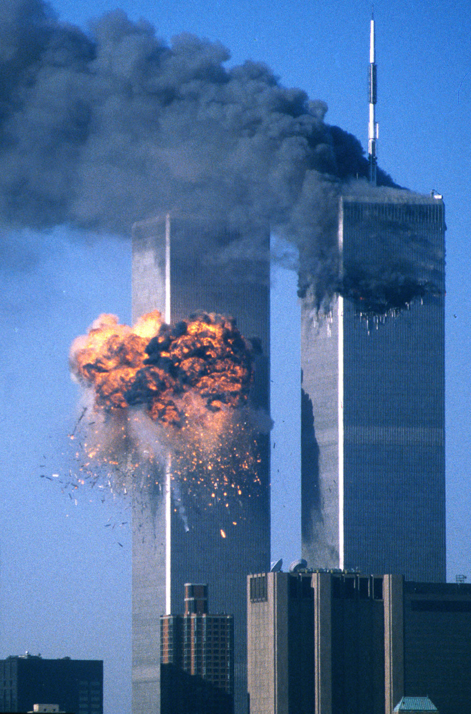

Террористические акты 11 сентября 2001 года
Девятого сентября 2001 года произошла одна из самых страшных террористических атак в истории человечества, когда группа боевиков под руководством организации "Аль-Каида" провела серию координированных нападений на территории США.
Эти террористические акты оставили за собой невообразимую катастрофу, погибло более двух тысяч человек, а тысячи других получили ранения и травмы. Главными целями нападений были символы американской мощи - башни близнецы Всемирного Торгового Центра в Нью-Йорке и здание Пентагона в Вашингтоне.
Этот трагический день изменил мир навсегда, после него многие страны приняли дополнительные меры безопасности, чтобы предотвратить подобные нападения в будущем. Мировое сообщество выразило свое сочувствие и поддержку американскому народу, обещая бороться с терроризмом во всех его проявлениях.
Однако, среди скептиков существуют теории заговора, утверждающие, что эти террористические акты были допущены специально с целью достижения определенных политических или экономических целей.
Одним из наиболее известных теорий заговоров об 11 сентября является теория внутреннего заговора, которая утверждает, что правительство США знало о готовящихся атаках и не предприняли мер для их предотвращения, а возможно, даже активно участвовали в их планировании. Приверженцы этой теории указывают на различные аномалии и несоответствия в официальной версии событий, такие как невозможность падения зданий при их столкновении с самолетом.
Сегодня, заговор о террористических актах 11 сентября 2001 года остается важной частью дискуссии о событиях того дня и является одним из самых обсуждаемых тем в современной истории.